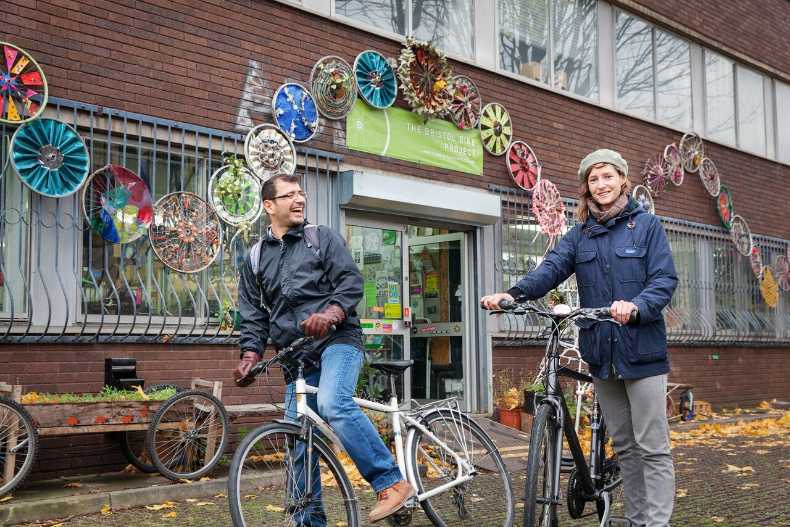
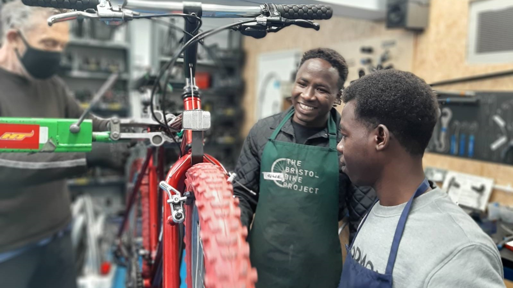
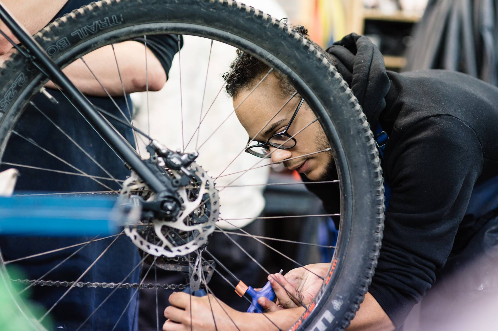
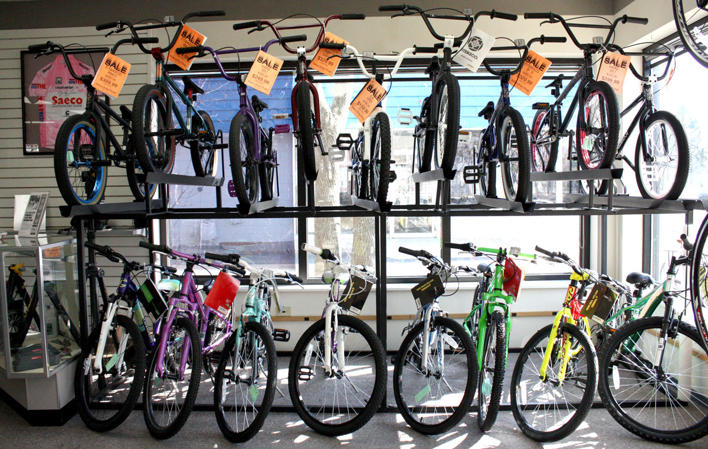
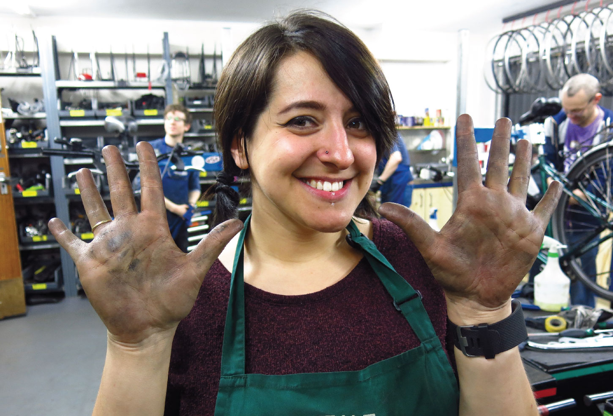

ABOUT US
OUR MISSION
We are a comprehensive community bike project,
repairing and rehoming unwanted bicycles.
We aim to help people from all walks of life get
out on two wheels and for it to be an inclusive
and empowering experience.
OUR STORY
The Bristol Bike Project was born in 2008 when
two friends returned from their first cycling
tour with a new-found love of bikes
and a desire to help their community.
OUR TEAM
Meet our fantastic team of staff and
volunteer coordinators!
OUR CO-OP
We are proud to be a co-operative, valuing people over profit
and putting our members at the heart of decision-making.
We are a grassroots member-led co-operative…
...putting our community at the heart of decision-making.
We share the co-operative values of self help, self responsibility,
democracy, equality, equity and solidarity. Our values are reflected
in the way we work and govern. We don't believe in hierarchies and we
place equal value on the work of all our members, regardless of their role.
Anyone who works at the Project or who volunteers regularly can become
a member.
We recognise that those working and volunteering day-to-day at the
Project are best placed to sense needs and to respond to them,
and we put trust in our members to take decisions responsibly
with the support of others.
We hold regular General Meetings to which all our members are
invited to discuss important issues for The Bristol Bike Project
community and to help shape our future.

PROGRAMMES
EARN-A-BIKE
Are you experiencing a long-term barrier to employment?
Would you benefit from access to affordable and sustainable transport?
Come and 'earn-a-bike' from us!
Here's how it works…
You will work with one of our Coordinators or volunteers for up to two hours to
refurbish a donated bike, learning basic bike maintenance skills in the process.
The bicycle is then yours to ride away! Once you have your bicycle you can keep it
running smoothly at one of our drop-in Fix-a-Bike workshops where volunteers can help
you with repairs, free of charge.
As well as our standard Earn-a-Bike workshop, we run a dedicated workshop for
anyone who would prefer a quiet, women-only space called Freedom of Movement.
For those aged 8-18, you can book on for our Young Person's Earn-a-Bike workshop.
Our Earn-a-Bike programmes emphasise empowerment and self-reliance, involving practical,
hands-on engagement that functions as a bonding process between owner and bicycle.
Since we started in 2008, well over 2000 bikes have been earned through the Project in this way.
THE SOCIAL CYCLE
Feel like you could do with a healthy dose of Social Vitamin C (Company)?
Come along to our weekly workshop for a little bit of tea and tinkering.
Here's how it works…
The Social Cycle is a weekly workshop bringing adults together in a fun and relaxed
environment. We fix bikes, we drink tea, we chat and have fun. We offer a healthy
dose of Social Vitamin C (Company!) by providing the space for people to come together
in a relaxed, friendly, nonjudgmental environment. No previous experience of working
on bikes is necessary!
Many of the bikes we fix go to support the Project's Earn-a-Bike programmes.
If you are working on your own bike, there may be a charge for new and used parts.
This workshop is free of charge and no booking is required. If you, or someone you know,
would like to come along or find out more then please pop in and see us or
email hello@thebristolbikeproject.org
AFTER SCHOOL BIKES
A free, drop-in workshop for young people aged
8-18yrs to learn how to fix their bike.
Here's how it works…
After School Bikes is a drop-in bike repair workshop for 8-18 year olds,
running every Friday from 3pm-5.30pm. Young people are invited to bring
in their bikes for repair, working alongside one of our staff or
volunteer mechanics.
This workshop is all about getting stuck in and learning to DIY,
so anyone coming along should be prepared to get their hands dirty!
As well as teaching new skills, we offer young people from all backgrounds
and of all genders the opportunity to spend time in a supportive,
stimulating and non-judgemental environment.
This is a drop-in workshop so no booking is required, but please be aware
that there may be a wait if the workshop is busy as numbers are limited
due to health and safety.
This workshop is free. New and used parts are sold at very discounted prices.
By coming to this workshop, you are agreeing to our
Terms & Conditions.

MAINTENANCE
COURSES
Here's how it works…
We run two courses – one for the basics and another
intensive course which gives a comprehensive overview
of bicycle maintenance. Find out just how empowering
and enjoyable cycle mechanics can be with a few tools
and the right knowledge!
Bicycle Basics is our introductory course to understanding
and maintaining your bike. It's suitable for complete
beginners who would like to learn simple repairs like fixing a puncture.
Our Intensive Cycle Maintenance Course is over two Saturdays,
tailored around your bike. Day 1 covers the most common
repairs whilst Day 2 gets into the deeper workings of the
bike. You can book both days or just one day if you prefer.
No prior experience is needed – just the desire to get
hands-on and skilled up! Each day has two tutors and is
capped to six students, to ensure we can give you all the
help you need in a relaxed and supportive environment.
For more information on what each course covers, or if you have
any further questions or would like help deciding which course
is right for you, get in touch by emailing:
courses@thebristolbikeproject.org
RAISE THE SADDLE
Raise the Saddle happens every Monday 6-9pm so come and
join us for some do it together fixing!
The aim of Raise the saddle is to create a space for women,
non binary and trans folk to learn, fix, teach,
socialise and help each other. We believe that it is
important to create this dedicated space, as well as
encouraging folk to participate in the wider BBP community.
Here's how it works…
Bring your bike to fix or for a simple check over at this
weekly workshop where we share knowledge and skills in a friendly,
relaxed atmosphere. No experience necessary!
The workshop is coordinated by an experienced mechanic,
but please be aware that this is a skill-sharing session,
and our volunteers are not necessarily experts.
Volunteers will be on hand to help you mend your bike,
teaching you how to check your bike over,
which tools to use and how to fix problems.
We have a selection of bike maintenance books and resources,
as well as internet tutorials, which you are welcome to use
and we can guide you through what to search for or refer to.
We also have wide range of new and used parts available to buy.
Raise the Saddle is a friendly and inclusive evening,
however we understand new environments and new groups
of people can feel intimidating. If you are coming
along for the first time and feel nervous, get in
touch and we would be happy to help you get settled in!
By coming to this workshop, you are agreeing to our
Terms & Conditions.
BIKE KITCHEN
Bike Kitchen runs every Thursday evening.
Here's how it works…
Come and take advantage of our fully equipped workshop with
professional work stands and a comprehensive set of tools
to help you tackle any problem. We also have wide range
of new and used parts available to buy.
The workshop is coordinated by an experienced mechanic.
There is a limit to the amount of help we can offer,
particularly when we're busy, so this workshop is only
suitable for those with some experience.
We have plenty of books and access to the internet if
you would like to follow a tutorial.
This is a drop-in workshop – no booking required.
If it's busy, you may have to wait until a stand is free,
or come back another week.
By coming to this workshop, you are agreeing to our
Terms & Conditions.
Prefer a women, trans and non-binary only space?

SHOP
BUY-A-BIKE
Looking for a decent bike that doesn't cost the earth?
Buy a fully refurbished bike from us and the money you
spend will help others get out on two wheels!
Here's how it works…
We sell fully refurbished second-hand bikes from as little as £150.
All the bikes we sell have been donated to the Project and given
a complete overhaul by our professional mechanics so they work like new.
Buying from us means saving another bicycle from the dreadful fate of landfill.
Any profit we make will be reinvested in our community programmes which
help people from across Bristol get out on two wheels.
We sell all kinds of bikes, including hybrids, mountain bikes and
road bikes. All bikes come with a four week warranty and if you
change your mind we'll offer a full refund on any bikes returned
to us within one week. Pop down during our opening hours to
check out our full selection and take one out for a test spin!
We also have a range of frames, accessories and new and second-hand parts.
If you can't find what you're looking for, we can usually order
it for you!
REPAIRS AND SERVICE
Is your trusty steed in need of some TLC?
No time to do it yourself?
Let us do the hard work for you!
Here's how it works…
We offer a full repair and maintenance service.
Any profit we make will be reinvested in our
community programmes which help people from
across Bristol get out on two wheels.
Drop in with your bike and to book your service!
DR BIKE
Need a bike mechanic to come to you?
Our team of professional mobile mechanics are
available to hire for events or to visit schools,
workplaces or community groups.
Here's how it works…
An event, community group, school or company hires a Dr Bike for a
four hour session. The mechanic will arrive by bike, towing a
trailer with tools, a stand and basic spares. The service is
then free to those who attend, including free brake blocks and
cables where needed. Each participant is treated to a safety
check, and a gear and brake tune up. They are then presented w
ith a form giving a diagnosis of the health of their bike.
If a bike needs more work than is possible outside of a
workshop environment, we recommend our in-house
repairs and servicing.
Booking a Dr Bike is a great way to show your commitment
to sustainable transport and healthy lifestyles.
We also provide discounts for charities and community events.

GET INVOLVED
DONATE A BIKE
Donate your bike and we'll refurbish and rehome it!
Here's how it works…
Please email a couple of clear photos of the bike you'd
like to donate to repairs@thebristolbikeproject.org
so we can let you know if we are able to accept it or not.
We are lucky to have so many donations that we can't keep up,
and so need to accept only the bikes we are able to process and use quickly.
If your donation fits the bill, please bring it to The Bristol Bike Project
during our opening hours. Please never leave bikes or parts outside our
premises when we're not open to accept them! It isn't fair on our
neighbours and we may not be able to repurpose them which means we will
have to use our time and resources to dispose of them. If you think your
bike is beyond reasonable repair then please take it to the tip.
If we can't salvage your bicycle, we will always strip them for any
usable parts which will then be used on other bikes. Any worn out,
damaged or otherwise unusable parts will be passed on to one of our
partner organisations for reuse, upcycling or recycling.
VOLUNTEER
Fancy learning bike mechanics, being part of a great team
and giving back to your community in the process?
Come and volunteer with us!
Our fantastic team of volunteers…
keep the wheels of this project turning. We have well over 100 volunteers,
who together give on average over 560 hours of their time each month to
help people from all walks of life get out on two wheels and ensure it
is an inclusive and empowering experience.
We have a wonderfully diverse team of volunteers of all ages,
genders and backgrounds. Everyone at BBP works together in a
supportive environment focussed on inclusivity,
skill-sharing and empowerment, which helps build our community
and create lasting friendships. We always welcome new volunteers,
whatever your background or level of experience, and have a range
of different tasks that you can get stuck into throughout the week
depending on your interests and availability.
How to join in?
If all this tickles your spokes and you'd like to get involved,
our drop-in evening sessions are now back on! Please read our volunteer
handbook and come along to volunteer night on a Tuesday or Wednesday.
- The session is 6.30 – 9.30. Please come for 6.30 promptly as we will close the session once it gets full.
- The entrance to the community workshop is on Seymour Rd opposite number 22.
- You will receive an induction when you arrive.
This will include a health and safety briefing,
a tour and you'll need to read the volunteer handbook,
safer spaces policy and fill in a form to say you've done so.
We recommend that you start volunteering on one of our volunteer nights,
but other volunteering opportunities are available.
Any questions just get in touch by emailing our volunteer coordinator on
volunteer@thebristolbikeproject.org
FUNDRAISE FOR US
Need an excuse to go on an adventure? Turn your pedal power
into an awesome fundraising machine and help more people
across Bristol get out on two wheels!
Become a BBP fundraising hero!
Whether you're cycling halfway around the world or rolling along the cycle path to Bath,
we'd love for you to use your adventure to support our community work.
The money you raise will support our Earn-a-Bike programmes,
which rehome unwanted bicycles with those who need them most,
including refugees and asylum seekers, people with long term health problems,
ex-offenders and people on substance abuse recovery schemes.
As well as providing access to sustainable and affordable transport,
our Earn-a-Bike programmes focus on education and empowerment for the whole community.
It' not just cycle rides you can use to support us!
You could organise a bike building competition, a yoga class,
or even a danceathon, and turn all that fun into something
which also gives back to your local community.
Whatever ideas are bubbling in your wonderful heads,
get in touch and we'll support
you to make the most out of your two-wheeled fun!